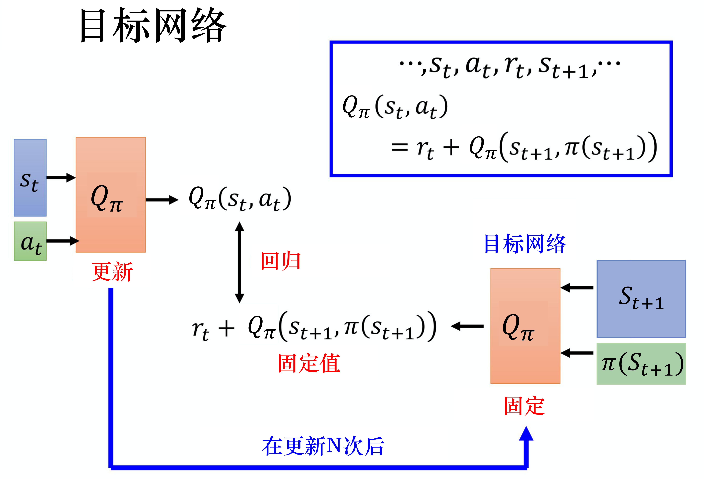
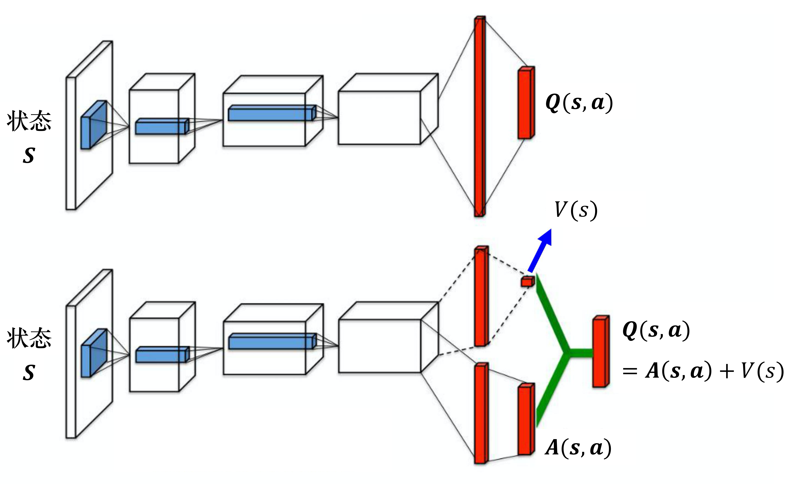

DQN算法——深度Q网络算法¶
本文图片与源码均来自：https://github.com/datawhalechina/easy-rl
介绍¶
核心思想：训练动作价值函数Q_\theta(s,a)，用于估计当前状态s下选取各个动作a所产生的积累收益，之后选择积累收益最大的动作a，其中a的范围包括整个动作空间。
优化目标：
注：当前动作的积累收益可以看成当前动作的临时收益和下一个动作的最大积累收益的和，因此为了优化Q网络，我们可以让上面两部分越接近越好，可用距离损失实现。
常用技巧¶
目标网络
由于损失函数包括Q_\theta(s,a)网络输出的两个Q分数，网络会从两个方向去优化网络参数，不稳定性因素较高。以y=r(s,a)+\gamma\max_{a'}Q_{\theta}(s',a')作为优化目标为例，参数\theta会随着训练的进行不断变化，因此y的值会不断改变，网络需要拟合一个不断变动的目标，不太好训练。
对此，常常会固定住一个Q分数的输出规则，使其成为优化目标，让另一个Q分数不断朝其推进靠拢。实际应用中，常常以y=r(s,a)+\gamma\max_{a'}Q_{\theta}(s',a')作为优化目标，预设一个目标Q_{\hat \theta}(s,a)网络，并且固定住他的参数，Q网络每更新指定次参数(C次)，就更新一次目标Q_{\hat \theta}(s,a)网络的参数，使\hat \theta=\theta，具体流程如下图所示：

探索机制
如果动作只利用Q函数的估计值去选择，那么动作的选取可能会具有单一性，即没见过的动作-状态对估计不出价值来，不会去探索新的动作，容易陷入到一个局部最优解里，类似过拟合了，模型只认准某些动作，对此，常常使用\varepsilon-贪心方法、玻尔兹曼探索方法来解决该问题。
- \varepsilon-贪心：
设置一个超参数\varepsilon，有几率随机选择动作来执行。
- 玻尔兹曼探索：
其中，A表示动作空间，T>0称为温度系数，如果T很大，则所有的动作几乎等概率选择（探索）；如果T很小，那么Q分数大的动作更容易被选中；如果T趋于0，则只选择最优动作。
经验回放
在利用DQN算法去训练网络时，模型与环境做交互往往会很花费时间，并且在做参数更新时，经验不需要通通来自某一个策略，也可以利用过去的策略来学习经验，因此，我们可以设置一组缓冲区，将交互所得的样本放入缓冲区中，之后对缓冲区里的数据做采样，更新参数，具体流程如下图所示：

注：如果缓冲区已满，则利用新样本替代旧样本，放弃旧的经验。利用经验回放还有一个好处，就是可以打破序列的相关性。
算法步骤¶
- 初始化Q网络、目标\hat{Q}网络，并且令\hat Q=Q
- 遍历每个episodes，假设t为当前的时间步
- 给定一个状态s_t，将其传入Q网络，计算每个动作会产生的Q分数（视为Q(s_t,a_t)），概率选择是按Q分数选择动作还是随机选择动作。如果是按Q分数选择，则取出可以使Q分数最大的动作a_t，即当前状态下取动作a_t时，未来的积累收益会最大
- 获得反馈r_t以及下一阶段的状态s_{t+1}
- 将(s_t,a_t,r_t,s_{t+1})存入缓冲区，当做一个更新样本（当缓冲区存满数据以后，才做后续采样更新，并且存满以后，再次获得更新样本时会从前往后覆盖数据）
- 按批量形式从缓冲区采样，采取batch个更新样本(s_i,a_i,r_i,s_{i+1})
- 将s_{i+1}传入目标\hat Q网络中，得到下一阶段每个动作的积累收益，并且选取最大的收益\max_a \hat{Q}(s_{i+1},a_{i+1})
- 计算目标值y=r_i+\gamma \max_a \hat{Q}(s_{i+1},a_{i+1})，其中\gamma表示折扣因子，利用y来优化Q网络的参数，使得Q(s_i,a_i)向y不断靠近（注意，此时只更新Q网络的参数，不更新\hat Q网络的参数）
- Q网络每更新C次参数，就重置一次目标\hat Q网络的参数\hat Q=Q
注：Q网络的输入仅为s_t，输出数据的维度为动作空间的维度n，即表示在状态s_t下执行动作a_i时会产生的积累收益，其中i\le n，因此，传动的DQN算法只适用于动作空间离散分布的情况，不适用于连续分布的情况。
DQN源码实现¶
网络结构¶
class DQN:
def __init__(self, state_dim, action_dim, cfg):
self.action_dim = action_dim # 总的动作个数
self.device = cfg.device # 设备，cpu或gpu等
self.gamma = cfg.gamma # 奖励的折扣因子
# e-greedy策略相关参数
self.frame_idx = 0 # 用于epsilon的衰减计数
self.epsilon = lambda frame_idx: cfg.epsilon_end + \
(cfg.epsilon_start - cfg.epsilon_end) * \
math.exp(-1. * frame_idx / cfg.epsilon_decay)
self.batch_size = cfg.batch_size
self.policy_net = MLP(state_dim, action_dim, hidden_dim=cfg.hidden_dim).to(self.device)
self.target_net = MLP(state_dim, action_dim, hidden_dim=cfg.hidden_dim).to(self.device)
for target_param, param in zip(self.target_net.parameters(),
self.policy_net.parameters()): # 复制参数到目标网路targe_net
target_param.data.copy_(param.data)
self.optimizer = optim.Adam(self.policy_net.parameters(), lr=cfg.lr) # 优化器
self.memory = ReplayBuffer(cfg.memory_capacity) # 经验回放
def choose_action(self, state):
"""
选择动作
"""
self.frame_idx += 1
# 引入探索机制，概率选择是按Q分数选择动作还是随机选择动作
if random.random() > self.epsilon(self.frame_idx):
with torch.no_grad():
state = torch.tensor([state], device=self.device, dtype=torch.float32)
q_values = self.policy_net(state)
action = q_values.max(1)[1].item() # 选择Q值最大的动作
else:
action = random.randrange(self.action_dim)
return action
def update(self):
# 经验回放机制
# 当memory中不满足一个批量时，不更新策略
if len(self.memory) < self.batch_size:
return
# 从经验回放中(replay memory)中随机采样一个批量的转移(transition)
state_batch, action_batch, reward_batch, next_state_batch, done_batch = self.memory.sample(
self.batch_size)
# 转为张量
state_batch = torch.tensor(state_batch, device=self.device, dtype=torch.float)
action_batch = torch.tensor(action_batch, device=self.device).unsqueeze(1)
reward_batch = torch.tensor(reward_batch, device=self.device, dtype=torch.float)
next_state_batch = torch.tensor(next_state_batch, device=self.device, dtype=torch.float)
done_batch = torch.tensor(np.float32(done_batch), device=self.device)
# 计算当前状态(s_t,a)对应的Q(s_t, a)，提取当时执行动作a时所产生的Q分数
q_values = self.policy_net(state_batch).gather(dim=1, index=action_batch)
# 计算下一时刻的状态(s_t_,a)对应的Q值，提取最大的Q分数
next_q_values = self.target_net(next_state_batch).max(1)[0].detach()
# 计算期望的Q值，对于终止状态，此时done_batch[0]=1, 对应的expected_q_value等于reward
expected_q_values = reward_batch + self.gamma * next_q_values * (1 - done_batch)
# 计算均方根损失，让t状态执行动作a时产生的积累价值量向最高的积累价值量靠拢
loss = nn.MSELoss()(q_values, expected_q_values.unsqueeze(1))
# 优化更新模型
self.optimizer.zero_grad()
loss.backward()
for param in self.policy_net.parameters(): # clip防止梯度爆炸
param.grad.data.clamp_(-1, 1)
self.optimizer.step()
def save(self, path):
torch.save(self.target_net.state_dict(), path + 'dqn_checkpoint.pth')
def load(self, path):
self.target_net.load_state_dict(torch.load(path + 'dqn_checkpoint.pth'))
for target_param, param in zip(self.target_net.parameters(), self.policy_net.parameters()):
param.data.copy_(target_param.data)
训练策略¶
def train(cfg, env, agent):
''' 训练
'''
print('开始训练!')
print(f'环境：{cfg.env_name}, 算法：{cfg.algo_name}, 设备：{cfg.device}')
rewards = [] # 记录所有回合的奖励
ma_rewards = [] # 记录所有回合的滑动平均奖励
for i_ep in range(cfg.train_eps):
ep_reward = 0 # 记录一回合内的奖励
state = env.reset() # 重置环境，返回初始状态
while True:
# 将状态传入Q网络，选取可以使Q分数最大的动作
action = agent.choose_action(state) # 选择动作
next_state, reward, done, _ = env.step(action) # 更新环境，返回transition
agent.memory.push(state, action, reward,
next_state, done) # 保存transition
state = next_state # 更新下一个状态
agent.update() # 更新智能体
ep_reward += reward # 累加奖励
if done:
break
# 每更新C次参数，就更新一次目标Q网络，将Q网络的参数赋值给目标Q网络
if (i_ep + 1) % cfg.target_update == 0:
agent.target_net.load_state_dict(agent.policy_net.state_dict())
rewards.append(ep_reward)
if ma_rewards:
ma_rewards.append(0.9 * ma_rewards[-1] + 0.1 * ep_reward)
else:
ma_rewards.append(ep_reward)
if (i_ep + 1) % 10 == 0:
print('回合：{}/{}, 奖励：{}'.format(i_ep + 1, cfg.train_eps, ep_reward))
print('完成训练！')
env.close()
return rewards, ma_rewards
DQN算法进阶¶
双深度Q网络（Double DQN）¶
由于在训练时，等式右侧始终以最大的Q分数当做优化目标，因此目标值很容易被设的太高，所训练的Q网络在应用时很容易非均匀地高估实际的Q值，不利于准确地根据价值来决策。对此，可以用两个Q网络去估计优化目标中的Q分数，优化目标如下：
# 实际的Q值
q_value_batch = self.policy_net(state_batch).gather(dim=1, index=action_batch)
# 下一个状态对应的实际策略网络Q值
next_q_value_batch = self.policy_net(next_state_batch)
# 下一个状态对应的目标网络Q值
next_target_value_batch = self.target_net(next_state_batch)
# 将策略网络Q值最大的动作对应的目标网络Q值作为期望的Q值
next_target_q_value_batch = next_target_value_batch.gather(1, torch.max(next_q_value_batch, 1)[1].unsqueeze(1))
# 期望的Q值
expected_q_value_batch = reward_batch + self.gamma * next_target_q_value_batch* (1-done_batch)
# 计算损失
loss = nn.MSELoss()(q_value_batch, expected_q_value_batch)
竞争深度Q网络（Dueling DQN）¶
原始的Q网络只沿着一个分支去优化，输出一组Q分数，在Dueling DQN中，会在网络后端引出两个子网络结构，分别对应到价值函数V(s)和优势函数A(s,a)，最终Q网络的输出由价值函数输出和优势函数输出的线性组合得到，区别如下：
-
传统的DQN算法一般利用样本更新参数时，只会更新当前状态下某一个动作的Q分数
-
多引入一个价值函数V(s)相当于在网络的输出中添加一个偏置项，在线性运算中，偏置项改变一次会直接影响所有位置的输出结果，因此在Q网络中，引入V(s)之后，每一个样本都可以通过更新V(s)来影响当前状态下所有动作的Q分数。

同时，为了让网络可以辨识V(s)和A(s,a)的作用，让其真正意识到引入V(s)的目的，我们会额外对A(s,a)做一个约束，让其更新比较“麻烦”，防止网络训练出来的V(s)=0，A(s,a)=Q(s,a)，例如让A(s,a)的每一列数据和为0，实现起来就是让A(s,a)减去均值，改进后的Q函数表达式为：
注：如果以相同的规则去更新V(s)和A(s,a)的话，容易导致网络具有不唯一性，不同的A(s,a)、V(s)组合有可能会得到同一个Q分数。
网络结构源码如下
class DuelingNet(nn.Module):
def __init__(self, n_states, n_actions,hidden_dim=128):
super(DuelingNet, self).__init__()
# hidden layer
self.hidden_layer = nn.Sequential(
nn.Linear(n_states, hidden_dim),
nn.ReLU()
)
# advantage
self.advantage_layer = nn.Sequential(
nn.Linear(hidden_dim, hidden_dim),
nn.ReLU(),
nn.Linear(hidden_dim, n_actions)
)
# value
self.value_layer = nn.Sequential(
nn.Linear(hidden_dim, hidden_dim),
nn.ReLU(),
nn.Linear(hidden_dim, 1)
)
def forward(self, state):
x = self.hidden_layer(state)
advantage = self.advantage_layer(x)
value = self.value_layer(x)
return value + advantage - advantage.mean()
优先级经验回放（PER）¶
在最初的经验回放策略中，会均匀地从缓冲区里采样数据，但实际情况中，这些样本不一定是最好的，有的数据可能会比较重要，因此我们可以给每个样本赋一个采样权重，对于输出值与目标值差距比较大、比较不好训练的样本，赋给其大的采样权重，让其更容易被采到，具体地来说，采样权重可以通过计算Q(s_t,a_t)-[r_t+\gamma\max_a Q(s_{t+1},a)]来得到。
同时，如果做非均匀采样的话，每个样本的在更新参数时所用的学习率应该随着采样权重而调整，防止某些样本主导训练的过程，如果一个样本被抽样的概率比较大，那么他的学习率就应当比较小，可以通过下面的公式来计算每个样本i的学习率：
注：
- 大抽样概率与小学习率之间并不矛盾，以小步幅去更新多次，可以更好地利用样本，但是会带来计算量大的问题，因此该策略只被用于重要的样本
- 从经验回放中抽取样本去更新参数时，可以利用更新后的模型参数再计算一次采样权重，替换掉缓冲区中的旧参数
噪声网络（noisy）¶
对于原来的探索机制，\varepsilon-贪心策略为了让网络可以尝试未知的动作，按概率随机决定是否执行Q函数所判断的动作，即使是面对同一个状态，智能体所采取的动作也可能是不同的，但一个现实世界中的策略并不是这样的，面对同一个状态应该以相同的规则做出回应，而不是有时候以规则A执行，有时候以规则B执行，因此\varepsilon-贪心策略在引入探索机制的同时，破坏了原有的动作执行规则。
对此，我们可以引入噪声网络这一概念，在原有Q网络的参数空间上加上噪声，噪声的引入会带来一定的随机性，因此同样也会起到探索机制的作用，但在应用的过程中不会像\varepsilon-贪心一样产生分流，即始终按照一个规则走，面对相同或者类似的状态会采取相同的动作。这又被称为依赖状态的探索，虽然也会去做探索这件事，但是探索的结果会与状态有关，看到同样的状态会选择相同的探索方式。
最简单的实现方法就是引入高斯噪声，将原始网络中的参数w替换为\mu+\sigma \cdot\xi，\mu和\sigma分别表示均值和方差，是网络中可学习的参数，\xi是随机噪声，为随机生成的参数，替换以后相当于w的每个元素从均值为\mu，标准差为\sigma的正态分布中抽取，并不是一个固定的数值。
注：
- 噪声只在训练过程中引入，在测试过程中不引入噪声，此时可以把\sigma设为0
- 在训练过程中引入噪声，不仅有利于模型做探索，还可以增强模型的鲁棒性，提高泛化能力，即提升模型应对不稳定性因素的能力，模型不会因为环境的一些细微变化而产生“失之毫厘谬以千里”的决策判断
参考代码：
import math
import torch
import torch.nn as nn
import torch.nn.functional as F
class NoisyLinear(nn.Module):
def __init__(self, input_dim, output_dim, std_init=0.4):
super(NoisyLinear, self).__init__()
self.input_dim = input_dim
self.output_dim = output_dim
self.std_init = std_init
# weight_mu和weight_sigma都是可学习的
self.weight_mu = nn.Parameter(torch.FloatTensor(output_dim, input_dim))
self.weight_sigma = nn.Parameter(torch.FloatTensor(output_dim, input_dim))
self.register_buffer('weight_epsilon', torch.FloatTensor(output_dim, input_dim))
self.bias_mu = nn.Parameter(torch.FloatTensor(output_dim))
self.bias_sigma = nn.Parameter(torch.FloatTensor(output_dim))
self.register_buffer('bias_epsilon', torch.FloatTensor(output_dim))
self.reset_parameters()
self.reset_noise()
def forward(self, x):
if self.training:
# self.weight_epsilon和self.bias_epsilon是不可学习的参数
# 在训练过程中充当噪声来源
weight = self.weight_mu + self.weight_sigma.mul(torch.tensor(self.weight_epsilon))
bias = self.bias_mu + self.bias_sigma.mul(torch.tensor(self.bias_epsilon))
else:
weight = self.weight_mu
bias = self.bias_mu
return F.linear(x, weight, bias)
def reset_parameters(self):
mu_range = 1 / math.sqrt(self.weight_mu.size(1))
self.weight_mu.data.uniform_(-mu_range, mu_range)
self.weight_sigma.data.fill_(self.std_init / math.sqrt(self.weight_sigma.size(1)))
self.bias_mu.data.uniform_(-mu_range, mu_range)
self.bias_sigma.data.fill_(self.std_init / math.sqrt(self.bias_sigma.size(0)))
def reset_noise(self):
epsilon_in = self._scale_noise(self.input_dim)
epsilon_out = self._scale_noise(self.output_dim)
self.weight_epsilon.copy_(epsilon_out.ger(epsilon_in))
self.bias_epsilon.copy_(self._scale_noise(self.output_dim))
def _scale_noise(self, size):
x = torch.randn(size)
x = x.sign().mul(x.abs().sqrt())
return x
class NoisyMLP(nn.Module):
def __init__(self, input_dim,output_dim,hidden_dim=128):
super(NoisyMLP, self).__init__()
self.fc1 = nn.Linear(input_dim, hidden_dim)
self.noisy_fc2 = NoisyLinear(hidden_dim, hidden_dim)
self.noisy_fc3 = NoisyLinear(hidden_dim, output_dim)
def forward(self, x):
x = F.relu(self.fc1(x))
x = F.relu(self.noisy_fc2(x))
x = self.noisy_fc3(x)
return x
def reset_noise(self):
self.noisy_fc2.reset_noise()
self.noisy_fc3.reset_noise()
注：以上仅是笔者个人见解，若有问题，欢迎指正
初步完稿于：2023年5月16日